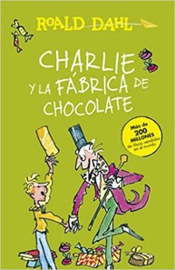

| Peter Pan | Pinocho | La Bella y la Bestia |
|---|---|---|
 |
||
Peter Pan podrá parecer un niño común y corriente, sin embargo el se niega a crecer. Vive junto con los niños perdidos y con el hada Campanita en el país de Nunca Jamás. Peter conocerá a Wendy, John y Michael, los tres hijos de los Darling, una típica familia londinense y los llevará a su más grande aventura donde conocerán a los indios, a las sirenas y a los temibles piratas guiados por el Capitán Garfio. |
Gepetto, el viejo carpintero, deseaba que su última creación, Pinocho, una bonita marioneta de madera, fuera su hijo y se convirtiera en un niño de verdad. El Hada Azul le concedió el deseo, no sin antes advertir a Pinocho que para ser un niño de verdad deberá demostrar que es generoso, obediente y sincero. Sin embargo, es un muñeco travieso, insensato y mentiroso, y se verá envuelto inevitablemente en una serie de extraordinarias aventuras donde tendrá que escoger entre el bien y el mal. Pero, en el fondo, Pinocho es valiente y tiene buen corazón y, al final, se dará cuenta de sus errores… Ilustrado a todo color, su lectura está recomendada a partir de 10 años. |
La historia de una Bella que logra ver la belleza interior de una Bestia; las maravillosas aventuras de un príncipe generoso junto a su leal paje y su hada madrina; la fábula de un príncipe que no sabía que su nariz era muy, muy grande; el cuento de un matrimonio al que concedieron tres deseos; y lo que le ocurrió a un príncipe inteligentísimo al que un hada condenó a ser requetefeo… |
| Melodía en la ciudad | Un beso de mandarina | Escarlatina. La cocinera cadáver |
"Melodía en la ciudad", Benjamin Lacombe, ed. Edelvives: un álbum ilustrado que nadie debería perderse. Una historia de amor y descubrimiento del propio talento, ilustrada magistralmente. Alejandro vive en una ciudad triste y gris y su destino es acabar trabajando en la fábrica, como su padre y la mayoría de habitantes. Pero un día llega a la ciudad un circo ambulante y con él la luz y la esperanza de un futuro mejor. Alejandro descubrirá el amor en Elena, una niña gitana. También descubrirá que tiene un talento innato por tocar la guitarra. Pese al rechazo inicial de sus padres, conseguirá romper prejuicios, que se sientan orgullosos de él y alcanzar sus sueños. Un libro perfecto para fomentar la autoestima del lector y la búsqueda de aquello que nos hace únicos y especiales |
"Un beso de mandarina", Eulàlia Canals, ed. Anaya:A un libro ideal para primeros lectores por su lectura ágil pero no por eso pobre o vulgar. Considerado uno de Los 14 libros de LIJ más destacados por la crítica en los últimos 10 años. Vanina llega nueva a la escuela desde un lugar lejano y envuelta en muchos misterios. Rápidamente el protagonista se enamora de ella, pero no sabe muy bien cómo acercarse a ella, además, cada vez que lo intenta, Ricky se interpone en su camino. Al final descubrirá muchas cosas de sí mismo, de la amistad, la solidaridad, la empatía,... todo en su afán por componer una canción que le devuelva la sonrisa a Vanina. |
"Escarlatina. La cocinera cadáver", Ledicia Costas y Víctor Rivas, ed. Anaya: divertidísima historia, llena de humor, misterios y recetas de cocina. Un relato fresco, ameno y ágil que sorprende por la originalidad de su tema. Román es un apasionado de la cocina y por su cumpleaños recibe un curso de cocina de lo más peculiar: Escarlatina, una cocinera que viene del Inframundo y que lleva muerta más de un siglo. Román se dejará convencer y la acompañará al inframundo para ayudarla a regresar entre los vivos. Sólo necesitan elaborar, en menos de tres días, un plato que guste tanto a muertos como a vivos, el problema es que los muertos tienen unos gustos un tanto especiales (y asquerosos). Suerte que ahí Román se reencontrará con su abuelo y su inestimable ayuda. |
| La increíble historia de.... La abuela gánster | Charlie y la fábrica de chocolate | El pequeño vampiro |
 |
 | |
"Charlie y la fábrica de chocolate", Roald Dahl, ed. Alfaguara: poca presentación necesitan los libros de Roald Dahl. Este es uno de los más conocidos, una joya literaria que nadie debería perderse. Como en la mayoría de sus libros, predominan los personajes humildes mezclados con personajes más cretinos e incluso grotescos o crueles, con los cuáles el autor ya acaba saldando cuentas. Mucho humor negro y crítica social y económica. Pero, sobre todo, entretenimiento a raudales. Podéis empezar por este o por cualquier otro libro de Roald Dahl ("James y el melocotón gigante", "La brujas", "Matilda",..), pero no dejéis escapar la oportunidad de adentraros en su magnífica y genuina literatura. |
"El pequeño vampiro", Angela Sommer-Bodenburg, ed. Alfaguara: otra colección que perdura con el paso del tiempo y sigue cautivando a los niños con historias mezcla de realidad y fantasía con muchos toques de misterio y miedo. Ésta es sólo la primera de muchas aventuras que vivirán el niño protagonista, llamado Antón, y su nuevo amigo Rüdiger, un niño vampiro de verdad. |